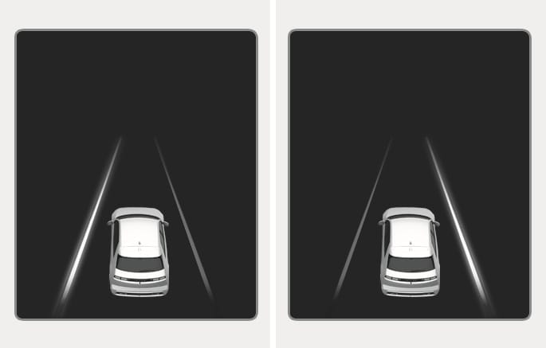

차로 이탈방지 보조 작동
주행 중 방향지시등을 켜지 않은 상태로 차로 이탈이 감지되면 클러스터에 초록색
차로를 이탈하는 경우에는 추가로 경고음, 스티어링 휠이 진동(사양 적용 시)하며 차로 이탈 경고를 알립니다.
차로 이탈방지 보조는 인식 대상에 따라 다음의 조건에서 작동합니다.
-
차선: 자차 속도가 약 45-200 km/h
-
도로 경계: 자차 속도가 약 60-200 km/h
-
조향 보조 중일 때 스티어링 휠을 잡고 고정하거나 일정 수준 이상으로 조작할 경우 조향을 도와주지 않을 수 있습니다.
-
차로 이탈방지 보조는 모든 상황에서 작동하지는 않습니다. 항상 스티어링 휠을 잡고 주행하십시오.
-
주행 상황에 따라 핸즈오프 경고문이 늦게 표시될 수 있습니다. 항상 스티어링 휠을 잡고 주행하십시오.
-
스티어링 휠을 약하게 잡으면 잡지 않은 것으로 판단하여 핸즈오프 경고문이 표시될 수 있습니다.
-
스티어링 휠에 물체를 붙일 경우 핸즈오프 경고문이 정상적으로 표시되지 않을 수 있습니다.
일정 시간 동안 스티어링 휠을 잡지 않으면 클러스터에 단계적으로 핸즈오프 경고문이 표시되고 경고음이 울립니다.
-
차로 이탈방지 보조가 작동 중이어도 스티어링 휠을 직접 조작하여 조향을 제어할 수 있습니다.
-
차로 이탈방지 보조가 조향을 보조할 때는 스티어링 휠이 무겁거나 가볍게 느껴질 수 있습니다.
-
클러스터의 주행 보조 뷰에서 차로 이탈방지 보조 작동 중 차선을 인식하면 차선이 회색에서 흰색으로 표시됩니다. 차로을 이탈하는 경우에는 이탈 방향의 차선이 깜빡입니다.
-
클러스터 설정과 관련된 자세한 내용은 4장 '클러스터 설정하기'을 참고하십시오.
차로 이탈 경고
2C_LaneDepartureWarning
클러스터 사양 또는 테마에 따라 클러스터에 표시되는 이미지나 색상이 다를 수 있습니다.